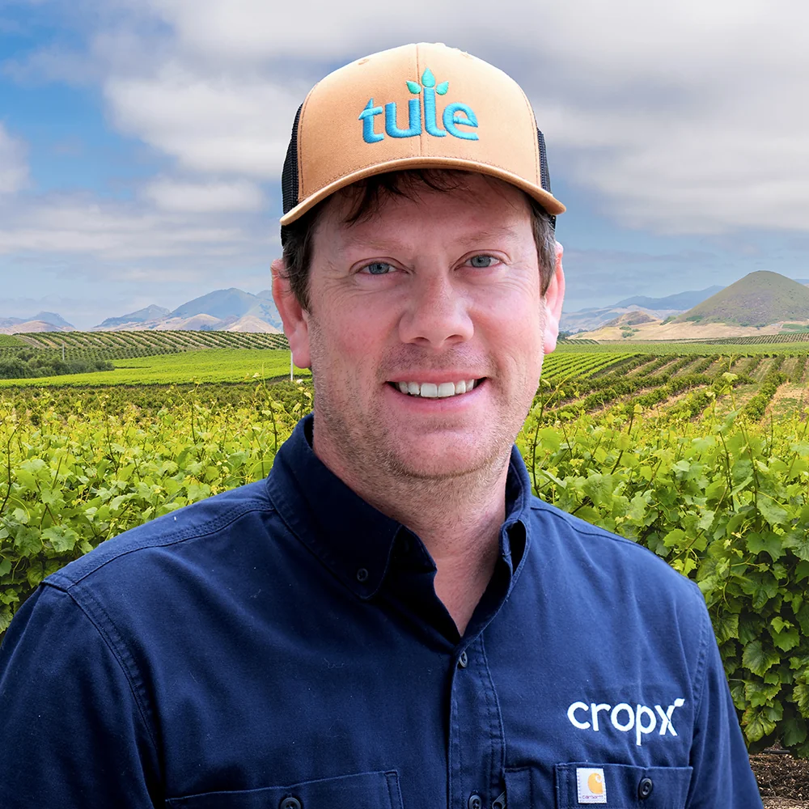
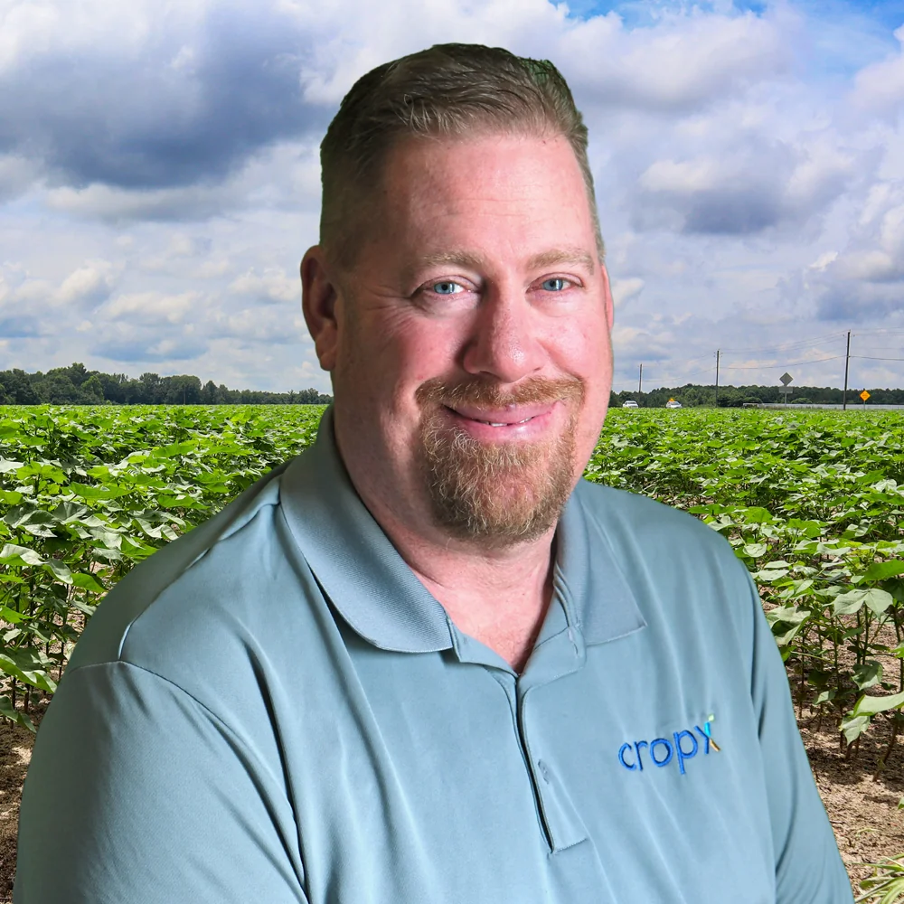
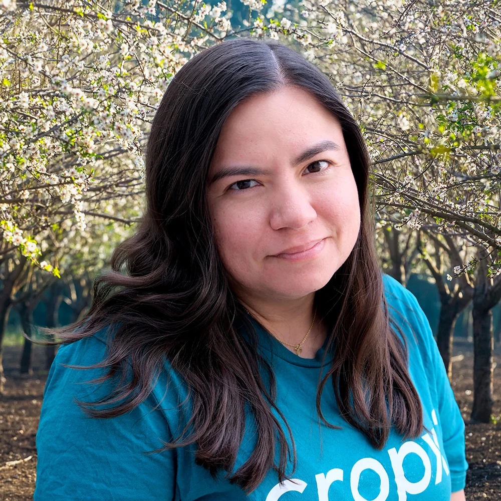
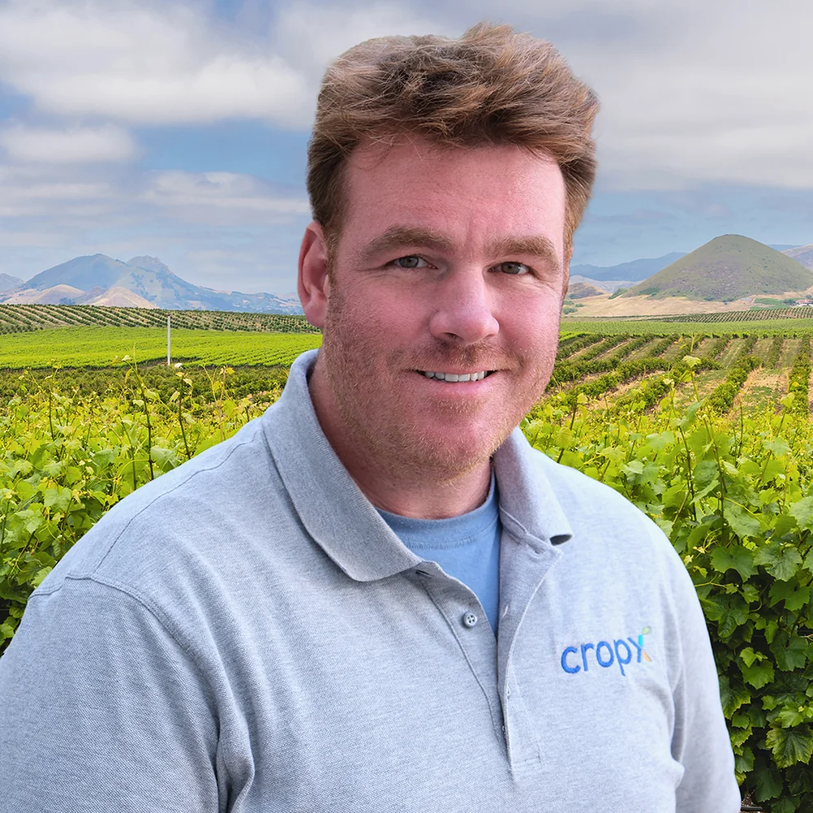
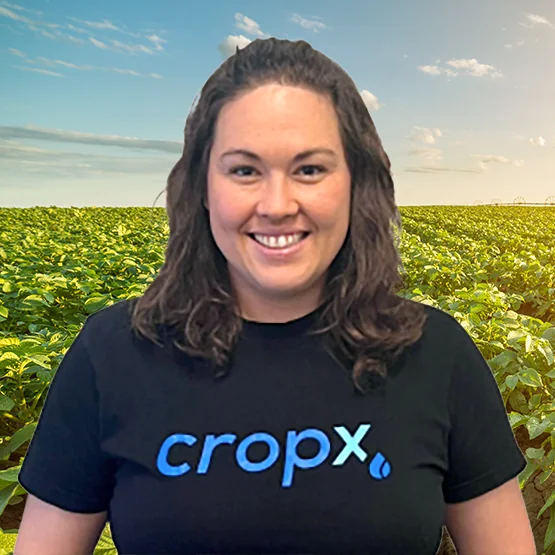

CropX was founded to solve a problem as old as farming itself — how do you make the right decision for your crops when the soil keeps its own counsel? We built a platform that listens.
Every decision we make — in the lab, in the field, and in the code — is guided by three commitments to the growers and partners who trust us.
We start where the plant starts — underground. Everything on the CropX platform is built on granular, real-time soil data collected at depth. Not estimates. Not models alone. Actual measurements.
We serve growers across 50+ countries, but every recommendation is calibrated to the specific soil type, crop variety, and climate conditions of that particular field — not a regional average.
The best agronomic outcomes happen when growers, service providers, and enterprise buyers share the same data. We built CropX to be the platform they all work from — together.
Every decision we make — in the lab, in the field, and in the code — is guided by three commitments to the growers and partners who trust us.
We start where the plant starts — underground. Everything on the CropX platform is built on granular, real-time soil data collected at depth. Not estimates. Not models alone. Actual measurements.
We serve growers across 50+ countries, but every recommendation is calibrated to the specific soil type, crop variety, and climate conditions of that particular field — not a regional average.
The best agronomic outcomes happen when growers, service providers, and enterprise buyers share the same data. We built CropX to be the platform they all work from — together.
We start where the plant starts — underground. Everything on the CropX platform is built on granular, real-time soil data collected at depth. Not estimates. Not models alone. Actual measurements.
We serve growers across 50+ countries, but every recommendation is calibrated to the specific soil type, crop variety, and climate conditions of that particular field — not a regional average.
The best agronomic outcomes happen when growers, service providers, and enterprise buyers share the same data. We built CropX to be the platform they all work from — together.
CropX was founded in 2015 by soil scientists and software engineers who believed agronomic decisions deserved better data. Today we operate across six continents, supporting growers of every scale.
Read our storyFounded in Israel, with roots in Volcani Center agricultural research
Countries where CropX operates today
Acres of fields actively managed on the CropX platform
Certified service providers delivering CropX worldwide
Our team brings together soil scientists, data engineers, agronomists, and agricultural operators — united by a belief that better data leads to better farming.





Our team brings together soil scientists, data engineers, agronomists, and agricultural operators — united by a belief that better data leads to better farming.
Joe W.
Chief Executive Officer
Kurt G.
Chief Technology Officer
Rebecca S.
Chief Financial Officer
Bradley Darden
Chief Revenue Officer
Lee B.
Chief Science Officer
Gabriela G.
VP Marketing
Nick L.
VP Sales
Naomi C.
VP People & Culture
Our team brings together soil scientists, data engineers, agronomists, and agricultural operators — united by a belief that better data leads to better farming.
From a soil research lab in Israel to fields on six continents — the story of why we built CropX, and what drives us every day.
The CropX Origin Story
Co-founders on why soil data changes everything — and why it took a group of scientists and engineers to make it practical.
Real stories from the farmers and agronomists who've changed how they farm with CropX.
Kevin Matthews, North Carolina
Award-winning commodity grower on saving eight irrigation cycles in a single season.
Waikato Dairy Farm, New Zealand
How a family operation used soil data to cut fertiliser spend while improving pasture quality.
CropX works across crop types, climates, and farm sizes. Here are four growers who've made it part of how they farm.
Almond Grower, California
Using soil sensing to navigate drought restrictions without sacrificing yield.
Viticulture Estate, South Africa
Fine-tuning vine stress to improve grape quality for premium wine production.
Cotton Operation, Australia
How CropX fit into an existing irrigation management system without replacing it.
Potato Cooperative, Netherlands
Enterprise-scale monitoring across hundreds of grower fields with one platform.
CropX is hiring across agronomy, engineering, customer success, and sales. If you care about agriculture and like hard problems, we'd like to hear from you.
Whether you're a service provider, enterprise buyer, or research institution — if you're serious about the future of agriculture, let's talk.
Talk to our team — we'll walk you through how the platform works for your specific crops, region, and farm scale.